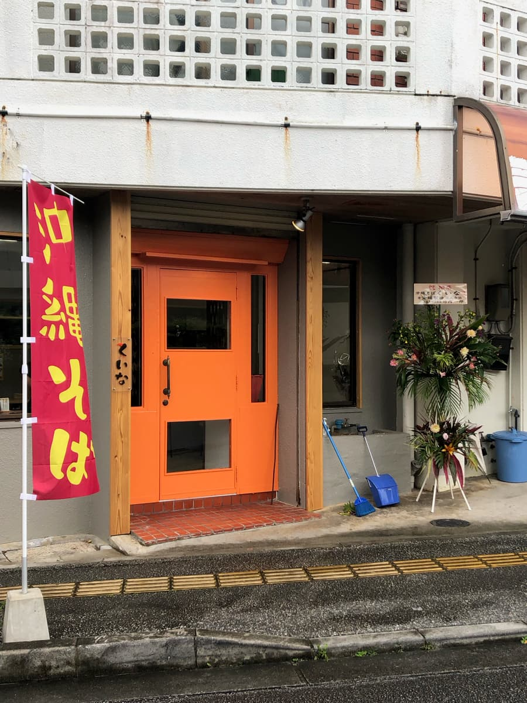
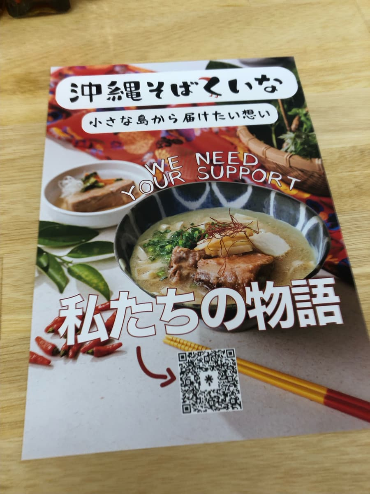
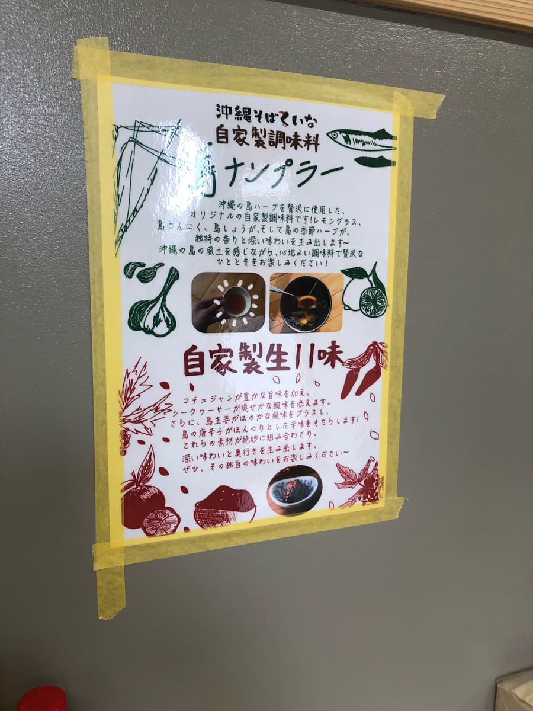
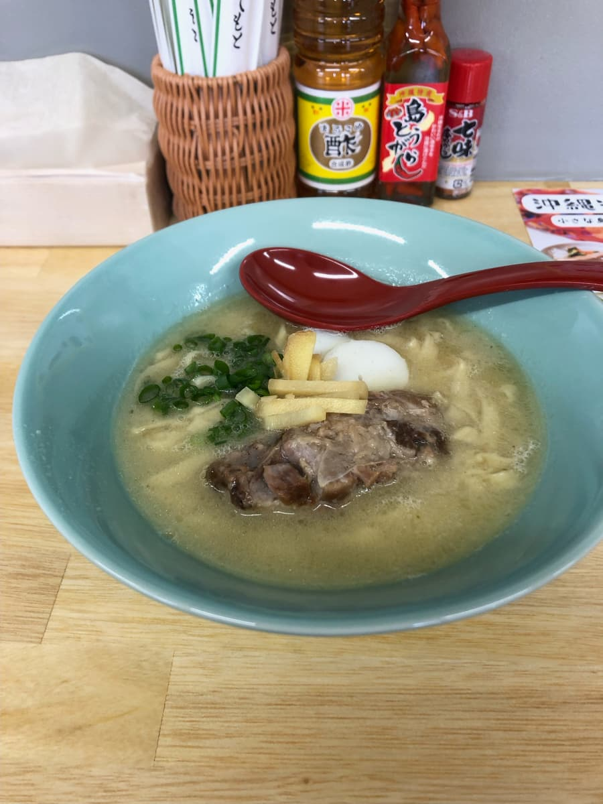
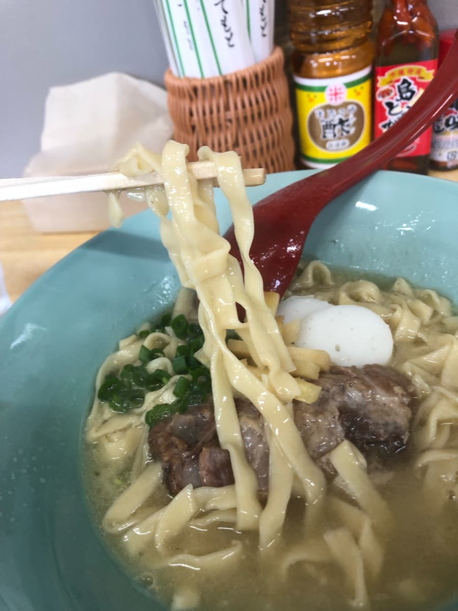

2024.4に食べました😄 こちらはホリエモンがプロデュースしていて4月26日にオープンしたばかりのお店です。グルメな堀江さんが手がけているので今回期待大で来ました😁

店内に入ると、店員がメニュー表を用いてメニューの説明。メニュー表の写真を撮影し忘れましたが、「初めての方は」と勧められた「島のそば」を注文することに。そばメニューはほかに、「島のヌードル（自家製調味料をブレンドとのこと）」、「んぶさーそば（志林川豆腐＋アーサ三枚肉）」、「イナムルチ混ぜそば」とのこと絞っていますね。



来ました😆 まずはスープを味わいます。鶏、カツオ、豚骨の合わせ出汁のようですが、なめらか感じで少し豚骨が効いた味ですね。他店には無い味と思います。

次に麺を頂きます。生麺で、名護の沖縄そばで見られるような平麺タイプですね。普通に美味しいと思ったのですが、なんか所々に硬めの芯が残っている部分も感じられる。オープンしたばかりで慣れていないのか、茹で方が不均一だなーと思いました。
軟骨ソーキもトロトロ柔らかいですが、筋感が残っている感じです。
評価（9点/15点）：今回、グルメなホリエモンプロデュースのお店なので、かなり期待していましたが、普通に美味しいかなぐらいの感じでした(^0^;)
麺のゆで方もバラツキがあったと思うので残念ですね。ですが、他の創作系の沖縄そばメニューも試して見たいと思いました。国際通り（県庁付近）に近いので一度は試して見ては如何でしょうか？
麺 ：★★★☆☆（3）
スープ：★★★☆☆（3）
具 ：★★★☆☆（3）